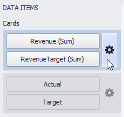

Delta
Cards allow you to visualize the difference between the actual and target values using special delta values and a delta indicator. If the default layout is used (Stretched layout type), the card displays the following delta values/elements:

- Delta Indicator - Indicates whether the actual value is less or greater than the target value.
- Percent Variation and Absolute Variation - delta values that show a difference between the actual and target value. You can also display the Percent of Target value. To do this, customize the card's layout.
To customize settings that relate to the calculation and display of delta values/elements, use the Options button (the  icon) displayed next to the data item container in the Cards section.
icon) displayed next to the data item container in the Cards section.

In the invoked Card Settings dialog, go to the Delta Options tab:
Then, specify the following settings:
Result Indication - You can specify the condition for displaying delta indication.
Greater is Good - The 'good' indication is displayed if the actual value exceeds the target value; if the target value exceeds the actual value, the 'bad' indication displays.

Less is Good - The 'bad' indication displays if the actual value exceeds the target value; if the target value exceeds the actual value, the 'good' indication displays.

Warning if Greater - A warning is displays only if the actual value exceeds the target value.

Warning if Less - A warning is displays only if the target value exceeds the actual value.

No Indication - Indication does not display.

- Threshold type / Threshold value - For instance, you can specify that a specific indication should display when the actual value exceeds the target value by 10% or by $2K. Use the Threshold type combo box to select whether you wish to specify the comparison tolerance in percentage values or absolute values. Then use the Threshold value box to specify the comparison tolerance.